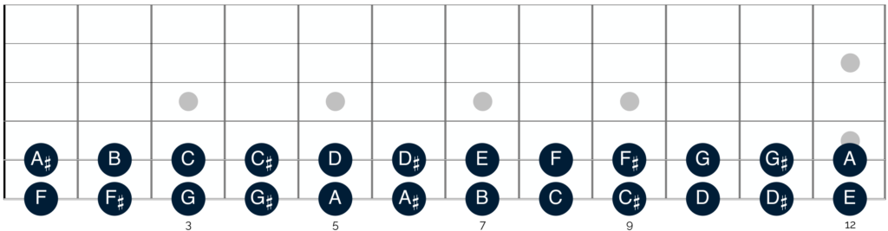
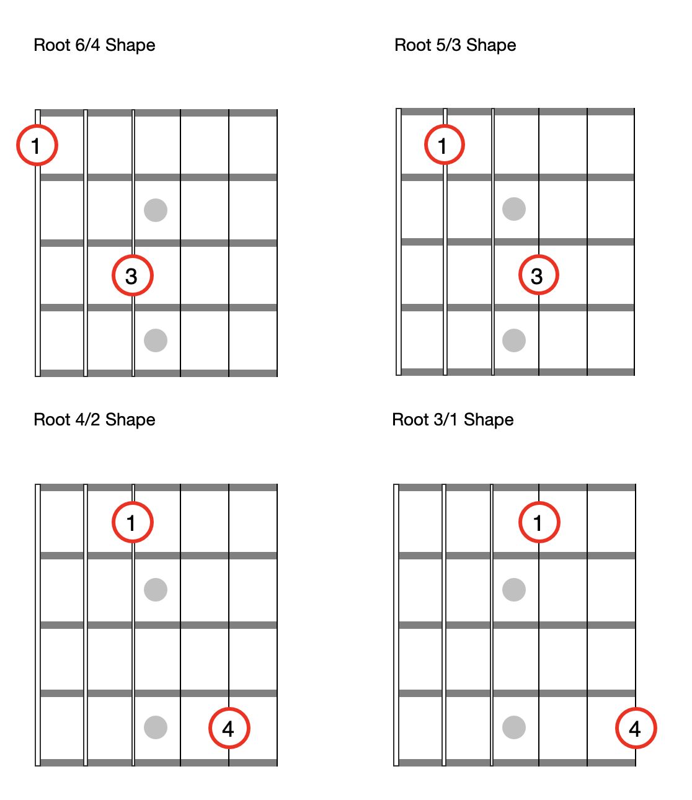
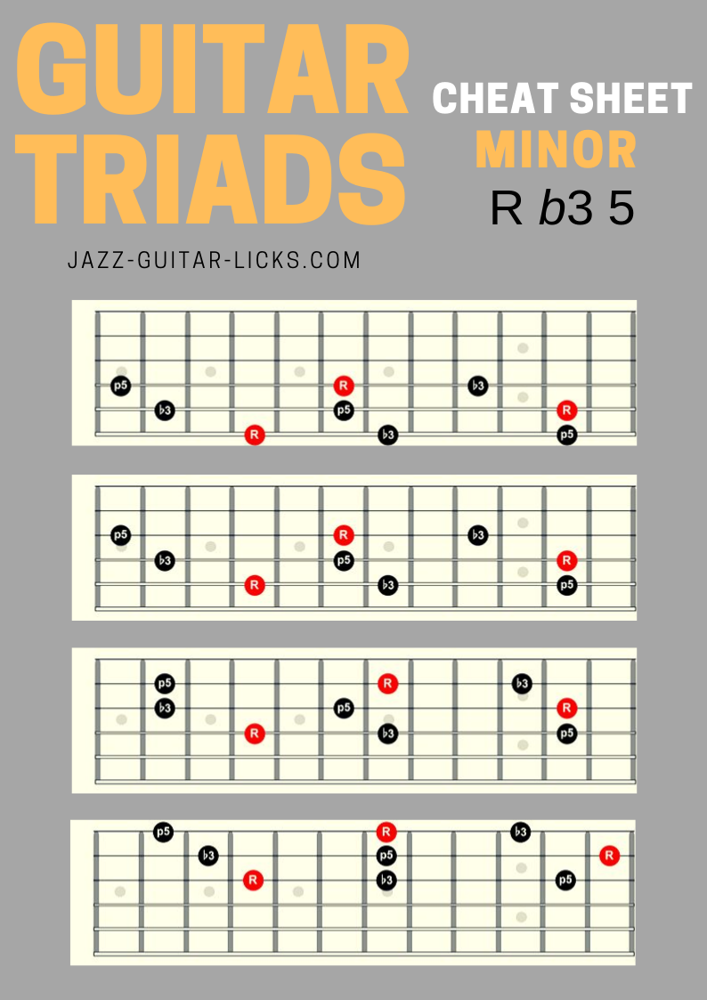

Introduction
What are the base attributes and skills needed to be a good musician?
• Experienced Ears (The ability to hear music, and know whats going on.)
• A well developed sense of timing. (The ability to play in time and with different feels and meters)
• Knowledge of how your instrument works and the physical ability (technique) to be able to play it well.
• Music Theory (A broad understanding of how music works and the ability to articulate it)
What are the base skills and attributes needed to be a good guitar player?
• all of the above music skills
• good tone
• ability to play appropriate rythym parts (big chords vs little chords) (busy struming vs sparse strumming) ect
• ability to play lead in different styles
• knoledge of how the guitar works and knowing the basic chord shapes and scales
What am I going to focus on in this article?
•Basic music theory all musicians should know and how to apply it to your guitar playing.
•The must know concepts, shapes, and patterns to be a well rounded guitar player.
Music Theory
What is music theory?
Music theory is the language musicians use to think about music and to describe it to each other.
The Notes in Music.
There are 12 notes in western music. (There can be more in eastern music such as Indian music but don't worry about that right now.)
A note is simply a frequency that we have asssigned a name to.
These are the notes.
A, A#, B, C, C#, D, D#, E, F, F#, G, G# (# stands for sharp)
Notice there are no sharps between B and C or between E and F.
A, A#, B, C, C#, D, D#, E, F, F#, G, G#
The notes that have #'s (sharps) in them can also be referred to as b's (flats) but we will get into that later, for now just think of them as #s.
Every fret on the fretboard makes the sound of one of these 12 notes. We name each location on the fretboard by the sound that it makes. For example every green circle in the photo below makes a G sound. Some are in different octives but they all make a G. Take a look at this diagram and notice that all 12 notes are there. Grab your guitar and a tuner, play some notes, and see if they coorespond to this diagram. (If your guitar is tuned than they will)

Open strings are named after the note that we normally tune them to. For example if you play the low E string open it makes an E sound, if you put your finger on the third fret of the low E string and pick that string it makes a G sound.
Conclusion
There are 12 notes in music.
A, A#, B, C, C#, D, D#, E, F, F#, G, G#
Memorize Them.
The Major Scale
A scale is a formula that helps us group notes together. The Major scale is the scale (group of notes) that all of western music is based on. Pretty much all music theory traces it's roots back to the major scale.
Learning the major scale will make it possible for you to easily figure out what key a song is in, know what chords are in a key, what notes are in a chord, what notes are in a scale as well as many other things.
Understanding the major scale is essential for understanding basic music theory and therefor is essential for communicating with other musicians.
If you're on stage at a blues jam and you're lost and the bass player holds up four fingers to you be better hope you know that he is telling you that the song is currently on the four chord and that because you are in the key of Bb the four chord is is Eb. BTW because guitar is shape based if you know what youre doing you dont even really need to know what the four chord is, only what key youre in and that you should be playing the four chord.
The major scale is a seven note scale based on two different intervals (distances in music) half steps and whole steps, a half step is equal to one note. This means when you move over a half step you move over one fret (one note) and when you move over a whole step you move over two frets(two notes).
Photo showing this
So I said a scale is a formula right? Well what is the formula for the Major scale?
The major scale Forumla is: W, W, H, W, W, W, H
Here is an example. Photo and examples written out showing all the notes and how major scales are derrived from them.
Here is a diagram of one octive of the major scale on a guitar.
How to make major and minor chords.
How to make a major chord?
To make a major chord you need three notes, the 1st, 3rd, and 5th notes of the corresponding Major Scale.
For example the key of C is C, D, E, F, G, A, and B.
So a C major Chord contains C E and G.
An A major scale is A, B, C#, D, E, F#, and G#
So an A Major Chord contains A, C#, and E
How to make a minor chord.
To make a minor chord you do the same thing and flatten the third
So if an A major scale is A, B, C#, D, E, F#, and G#
An A Minor Chord contains A, C and E and a C minor Chord contains C Eb and G
Then show triads or the caged system to show how many different ways you can make a C chord and an A chord and an A minor chord
The caged system is just barre chords and its awesome
What are the chords in a key and how to find them.
If you want the simple answer here is it.
Take a major scale. Turn the 1st, 4th, and 5th, note into major chords, the 2nd, 3rd, and 6th notes minor chords, and the 7th note a diminished chord.
Example: the C major scale is C, D, E, F, G, A, and B.
The key of C major is C, Dminor, Eminor, F, G, Aminor and B diminished (when talking about chords if the quality is not specificed it is assumed that the chord is major, so if someone says D chord they mean a D major chord. Also diminished chords are signified with the degree symbol ° but diminished chords are rarely used so you dont really need to worry much about them.)
Why?
If you want to know why this is then here we go. Insert charts explaining all the notes in all the chords in a few keys ideally with an interactive diagram that walks you through it.
Fretboard IQ
Prerequisites
You should know open chords. A, Am, C, D, Dm, E, Em, F, G.
Including 7th chords
A7, Am7, C7, D7, E7, Em7, G7
You should understand some basic strumming patterns and be able to play some songs all the way through including
You should know some riffs and licks.
You should know string names.
String Numbers
Strings are numbered from the high E to the Low E. High E is 1


Learn the Notes on The E and A Strings First
Learning the notes on the E and A string will be very useful when using barre chords, power chords, and scales. Also with the octive trick I am going to show you later you can know the name of any note on the fretboard instintaniously if you know the notes on the E and A string.
Barre Chords and the Caged System
The Caged System is simply getting the most out of barre chords.
Standard tuning octive hack to not have to learn the whole fretboard.
The most beautiful thing about the guitar is that it is shape based. You can often learn one shape for something and use it in every key and multiple octives. An example of this would be barre chords(I'll explain that later.)
These two shapes actually create the same interval, an octive, we will get into what that is and how it works later but for now all you need to know is that if you play the shape from the top two photos from the 6-4th strings or from the 5-3rd strings both notes you are playing will be the same note, one will be an octive higher but they will be the same note.
The only difference between this shape and the next shape is that the second shape requires you to move your second finger one fret further.
Knowing these two shapes allows you to quickly find the name of any note on the fretboard simply by knowing the notes on the Low E string and the A string.
If you want know the notes on the Low E string you also know all of the notes on the high E string becasue they are both tuned to E. So whatever the note on the fifth fret of the low E string is (A) it will be the same on the fifth fret of the high E string.
So great I memorized two string worth of notes and now I know three strings worth of notes. Fun trick. What about the other three strings?
These octive shapes give us another easy trick.
If you want to know the name of a note on a string other than the E or A string you can use the octive shape to trace it back to the E or A string which you do know.
For examample: if you wanted know all the notes on the Low E string and you wanted to know what note is on the third fret of the D string you could simply put make the first octive shape with your second finger on the third fret of the D string and whatver note your first finger is on is the same note. So in this case your first finger is on the first fret of the Low E string which is an F so the third fret of the D string must be an F.

How to Get The Most Out of the Pentatonic Scale
What is the pentatonic scale
How to learn it
Major vs Minor and mixing
How does it work
Triads
What is a triad?
A chord is just three notes right?
Here is every major chord shape, that does'nt repeat any notes, on the entire fretboard.

Here are the minor ones

Whatever note the root is on is the chord you are playing.
Playing the Changes
Arpeggios
This exercise changed my understanding of the guitar.
Other Concepts and Links To My Favorite Teachers
My favorite Guitar Lesson Subscription Site
Michael Palmisano's GuitargateMy Favorite Youtubers
Eric HaugenMichael Palmisano
Paul Davids
Desi Serna
Marty Shwarts